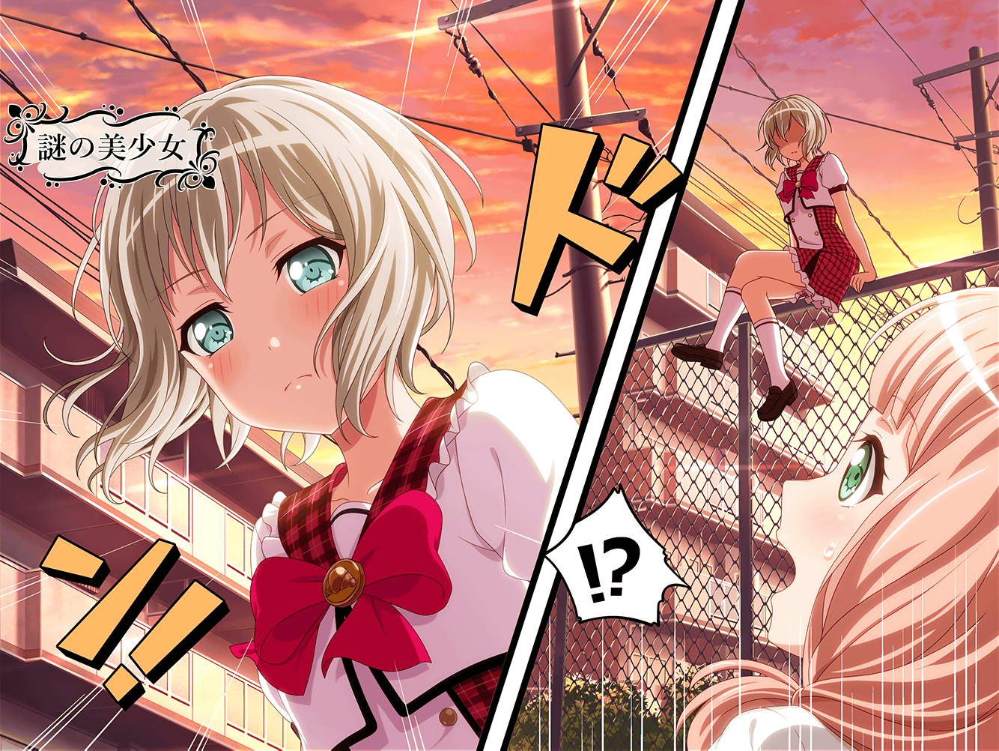

スタジオ
モカ
あっ、いいよいいよ蘭～。
マイクのセッティングとか、あたしやるって～♪
蘭
え……あ、ありがと
モカ
ほら、座って待ってて。
あ、のど飴舐める？ 持ってたかな～
蘭
ちょ、ちょっと……何、どうしたの？
今日のモカ、いつにもまして意味わかんないんだけど
モカ
も～、ひどいな蘭ってば～。
でもモカちゃんは優しいから、許しちゃおう～
蘭
え、なんなのホント……
ちょっと怖いんだけど……
モカ
ふっふっふ～
モカ
モカちゃんはー、
最近とっても嬉しいことがあったので
とってもご機嫌なんですねー
モカ
ほらほら、聞いてくれてもいいんだよ～？
蘭
はあ……
蘭
……それで？
何、どうしたの
モカ
ふっふっふ～、実はですね～……
最高に面白い新連載が始まったんだよ～！
蘭
ああ……あの毎週買ってるやつに？
モカ
そうそう。
気になる？ 気になっちゃう～？
そうだよね～！
モカ
あ～、でも残念！
家に置いてきちゃったんだな、これが～。
ごめんね、蘭～
蘭
いや、別にそんなに気になってないし
モカ
そんな～！
これを読まないなんて、もったいないよ～！
蘭
なんかそれ……
前にも似たようなこと、言ってた気がする
モカ
いやいや、今回はそれを上回る面白さなんだよ～！
蘭
でも前そう言ってたやつ、
すぐ連載終わらなかったっけ？
モカ
うっ……
ちょっと、蘭～、あたしの古傷をえぐらないでよ～
モカ
今回は大丈夫だって！
絶対！ 超大作になるはず！
蘭
ふーん……
モカ
絵はちょっと……独特だけど、
謎が謎を呼ぶ展開で、毎週ワクワクするんだよ～
モカ
きっとそのうち映画化とかしちゃうんだろうな～！
蘭
……どんな内容なの？
モカ
おっ！ 気になってきちゃったー？
それはですねー……
モカ
……やっぱ秘密～
蘭
ちょっ、なんで！？
モカ
だって、ここで話したら、
ネタバレになっちゃう話ばっかりなんだもん～
モカ
そしたら読むときに、先入観持っちゃうじゃん
そういうのって、もったいなくない？
モカ
たとえば、この話で出てきたキャラ、
どうせ後で裏切るんだろうな～。とかって
なっちゃうかもしれないでしょ？
蘭
まあ、それは確かに……
モカ
最初はさー、そういうの考えないで読んだ方が、
楽しいと思うんだよね
モカ
やっぱり自分が実際読んだときに、
どう感じたのかを大切にしなくっちゃ～
モカ
ストーリーがしっかりしてるマンガは特に、
そうだと思うんだよね～
モカ
……以上、マンガ大好きモカちゃん先生の
特別講義でした～
蘭
でもさ、モカ
モカ
ん？
モカちゃん先生って呼んでくれないと、
誰のことかわからないな～？
蘭
……モカちゃんせんせー
質問があるんですけど
モカ
はい、なんでしょーか美竹さん
蘭
モカの言うこともわかるけどさ、
どんなマンガか全然わからないと、
そもそも読もうって思えなくない？
モカ
……おおー。
それも一理あるなー
モカ
では、簡単にあらすじを……
実はこのマンガ、主人公がなんと……
蘭
なんと……？
モカ
はい、ここまでー
蘭
え、お、終わり？
それだけ？
モカ
いや～、これ以上は
ちょっと言えませんな～
蘭
はぁ……
ま、どうせモカのことだから、
そう来るとは思ったけど
蘭
……じゃあそのマンガ、読んでみるから
今度持ってきてよ
モカ
いいよー。
あ、でもそれならさ、
今日の練習終わったら、そのままうち来ない？
モカ
あたしの家で読んで、
そのまま感想聞かせてよ
蘭
え、でも……そんな急に
モカ
あたし的には全然おっけーだよ。
ていうか、早く蘭に読んでほしいんだー。
もうネタバレ話したくて、しょうがないんだよね
モカ
だから早く読んで、
一緒に毎週楽しみにしよーよ。
モカちゃんの生きる希望をさ〜
蘭
生きる希望って、大げさすぎ。
でもまあ、そこまで言うなら……行ってもいいけど
モカ
わーい、モカちゃん家、
１名様ご案内でーす♪